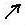
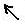

Talk:Art
From Dragon Age Toolset Wiki
Maybe need separation between Art and Designer Resources. As well as cleanup the Design Page, which is cluttered with everything.
Would something like this be worth replacing the image in overview? Im not sure if i see it correctly. Eshme 02:44, 26 January 2010 (UTC)
| Game | ||||||
 |
 |
|||||
| Designer Resources | Design | 2DA's | ||||
| Art Resources | Art | 2DA's |
{kind=link}
{kind=link}
- Seems reasonably accurate to me. I'll take a stab at redoing the overview graphic tomorrow along these lines. BryanDerksen 01:03, 27 January 2010 (UTC)
- Actually it's not: art resources also form the basis of other art resources and designer resources are included in other designer resources. That aside, there doesn't seem to be any real point to this diagram: in some ways it is overly simplistic and yet, with seemingly no rhyme or reason include both custom content and 2da while omitting everything else. Who is it for? What purpose is it supposed to serve? However, and hopefully most compelling, given that navigation is already under review why not incorporate these ideas into that review? Global structured solutions rather than dislocated piecemeal reactions.
- --Sunjammer 01:26, 27 January 2010 (UTC)
- Ahh ok , was unsure about it. I dont have the best idea, this was meant to tell what what is needed to be visited but obviously it isnt everything. The current overview picture is actully quiet good i was surprised it was hiding somewhere at first. Just it doesnt have clickyclicky, to jump to pages hehe Eshme 01:48, 27 January 2010 (UTC)
- Art resources have always been a bit of a loose cannon in the toolset, they insert themselves everywhere. Perhaps a better overview page would label major types of art resource, showing eg. level layouts, model meshes, etc., and how they interrelate. But that's starting to get a little complicated for an "overview". I think the important message of the image is not necessarily where every specific type of resource goes, but rather the big picture - ie, there are some things stored in the database, there are some things stored in the file system, and to put them all in the game you have to process them into a finalized form via various tools. The database-filesystem-export arrangement isn't necessarily intuitive to people coming to the toolset fresh and knowing the general layout makes it easier for readers to fill in the blanks later.
- One way or another this overview image does need some updating, though. I believe back when I created it the only "art editor" we'd put in the toolset so far had been the face morph editor. :) BryanDerksen 17:20, 27 January 2010 (UTC)
- Perhaps something like that could serve the main page? If replace "game" with "module" and just leave one "art" and one "design". Then add "Scripts" to the picture and you have what is on the front page. Sidenotes are "getting started" and "tutorials". Semitransparent images to click and go into a category like it is now. This means dropping cinematofy and sounds, which im all for anyway. Then one may drop having this as navigational aid here. But take that just as a comment rather than a suggestion :P Eshme 17:59, 27 January 2010 (UTC)
- Well, I wouldn't want to limit the main page's options based on what can conveniently fit into a flowchart. Something like this might serve as a good overview image on Getting Started, though, since its purpose would be to give some orientation to a new user who has no idea what the lay of the land is. BryanDerksen 20:57, 27 January 2010 (UTC)
- Additionally the wiki is intended to support more than just novice builders: there are supposed to be high profile (i.e. front page) sections for machinima makers and cutscene editors (cinematography); composers, voice over artists and sound engineers (sound and music); custom content developers, etc. Moreover the wiki is intended to be useful to experienced and veteran modders as well as to novices. It is important we remember all of this when editing or restructuring the wiki: we shouldn't edit or remove something simply because we don't think it is relevant or because we don't understand it as it may be vital to another interest group or experience level.
- --Sunjammer 23:19, 27 January 2010 (UTC)